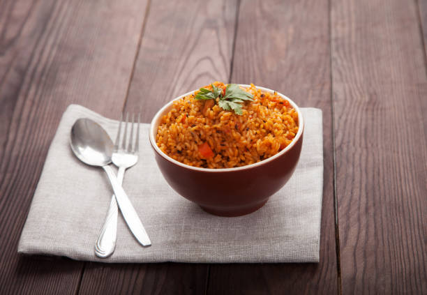
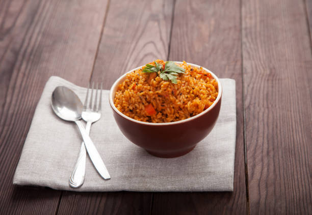
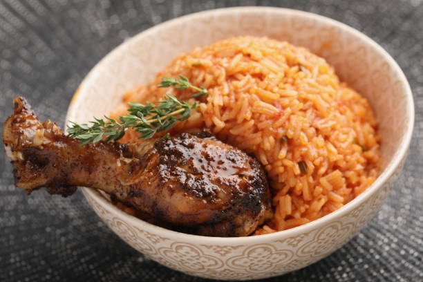
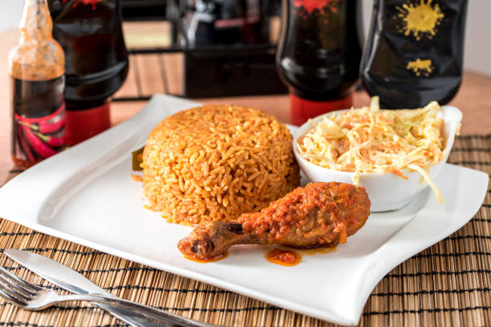
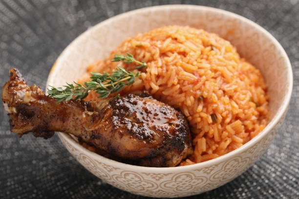
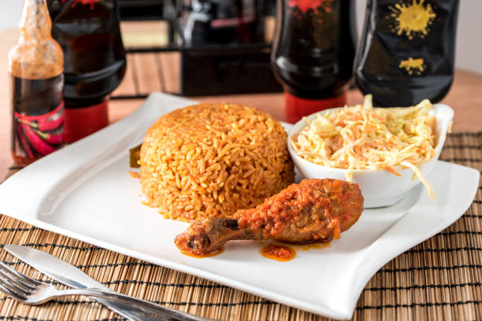

Jollof Rice
About Jollof
Jollof rice is a rice dish from West-Africa. The dish is typically made with long grain rice, tomatoes ,onions ,spices ,vegetables and meat in a single pot,although its ingredients and preparation methods vary across different regions. The origins of jollof rice can be traced to the Senegambian region that was ruled by the Wolof or jollof Empire in the 14th century, spanning parts of today's Senegal,The Gambia, Mauritania where rice was grown.
List of ingredients needed to prepare jollof
| Ingredients |
Measurement |
| medium sized tomatoes |
5 |
| red ball pepper |
1 |
| medium sized onions |
1 |
| scotch bonnet peppers |
2 |
| Groundnut oil |
1/4 |
| tbsp tomato paste |
3 |
| cups of parboiled rice |
2 |
| cups of chicken stock |
2 1/2 |
| tsp salt to taste |
1 |
| tsp curry powder |
1/2 |
| tsp thyme |
1/2 |
| tsp All purpose seasoning |
1 |
| Knorr stock cube |
1 |
| bay leaves |
3 |
| Water |
Enough quantity |
Steps of preparing Jollof Rice
-
Blend your tomatoes, red pepper, scotch bonnet peppers in a food processor or blender for about 45 seconds, make sure that everything is blended well.
-
In a medium sized pot, heat your oil on medium-high heat. Once the oil is heated add the onions you set aside and fry just until they turn golden brown. Once the onions, have turned brown in color add the tomato paste and fry for 2-3 minutes. Then add the blended tomato mixture (reserve about 1/4 cup and set aside) and fry the mixture with the onions and tomato paste for about 30 minutes. Make sure you stir consistently so that the tomato mixture does not burn
-
After 30 minutes, turn the heat down to medium, and add the chicken stock. Mix and add your seasonings (salt, curry powder, thyme, all purpose seasoning, and the Knorr stock cube). Continue to boil for 10 minutes
-
Add the parboiled rice to the pot. Mix it very well with the tomato stew. At this point if you need to add water so that the rice is level with the tomato mixture/chicken stock go ahead and do so. Add the bay leaves, cover the pot, and cook on medium to low heat for 15-30 minutes.
-
When the liquid has almost dried up add the remaining tomato stew, cover, and let it cook for another 5-10 minutes heat until the liquid has completely dried up. Turn off the heat, mix thoroughly, and your Jollof Rice is ready to be eaten!

 

 


